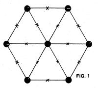
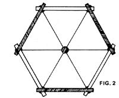
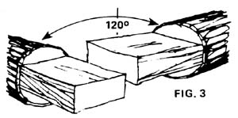
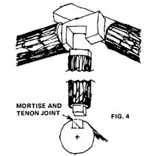
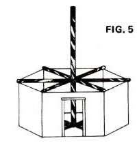
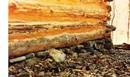
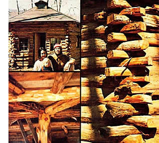

Cheryl and I are lucky," says Bushrod James of Witter, Arkansas. "We've not only been able to move back to the land . . . we've also managed-with a little help from our friends-to build the kind of home we've always dreamed about: a beautiful, comfortable, multi-sided log cabin made entirely of Quercus alba . . . white oak! And the whole house cost us just 17d a square foot!"
It's a gray and rainy day today in the "holler". Everything-including the mosscovered fieldstones, the mist that hangs like a blanket over the trees, and the slumbering, silent forest itself-is gray and wet and quiet. And we're viewing it all from within our warm, comfortable log cabin fortress . . . the cabin that Cheryl and I and our two sons built ourselves using that superlative all-purpose construction material of the Ozarks, white oak.
As a cabin log, oak has no superior: I know of several oak cabins close by that are well over 100 years old, and their logs are still in perfect condition. (If anything, the lodges are more stonelike now than they were when they were built.) The oldtimers in this area have a saying about oak logs: "Keep 'em dry and they'll last ya forever!"
Perhaps when you move to the country you'll find (as we did) that you have oak on your property. If so, rejoice! It means that you, too, can construct a solid oak fortress in the wilderness.
Meanwhile, here's how we built ours.
ILLUSTRATIONS BASED ON DRAWINGS BY BUSHROD JAMES
We began felling trees for our cabin in early June to take advantage of the spring sap flow, which makes for easier-to-peel logs. (If you intend to put your timbers up round, as we did, you'll most certainly want to peel them. De-barked logs are much less vulnerable to insect attackand season more quickly-than those left unpeeled.)
We stripped most of our trees right where they had fallen. To make our job easier, though, we did support one or both end(s) of each log on nearby stones or tree stumps. This meant less stooping over and fewer backaches at the end of the day.
Everyone seems to have his or her favorite peeling tool and you'll just have to experiment until you find the implement that suits you best. My wife likes to sit astraddle the log she's working on and de-bark it with a drawknife. I prefer to use a pole (or "chopping") axe with a broad blade, partly because the added weight of the axe can break through those stubborn places where the bark wants to stick.
If you intend to let your logs dry for several months, you needn't de-bark each tree trunk entirely . . . just peel a few large strips away and set the partially exposed log aside. As the wood dries, it'll pull away from the remaining bark, which can then be removed easily.
All told, it took us about two months to fell and peel all the logs for our cabin, with lots of time out for chores in the garden and visits to the swimmin' hole.
By midsummer, our cabin's design had begun to take shape in my mind, although I hadn't yet put anything on paper. Two things were certain: [1] 1 wanted to build a multisided structure . . . something a little more aesthetic than the standard Abe Lincoln log cabin. [2] The dwelling would have to be constructed from the relatively small logs that my recently acquired mule-Jude-could maneuver without much difficulty. This meant timbers no more than 12' to 15' long and 12" in diameter.
With these factors in mind, I ultimately decided to build a cabin in the shape of a hexagon, with 13-foot-long sides. (What I had done, in fact, was re-invent the Navajo Indian counterpart to the white man's log cabin: the hogan. The only difference is, the traditional hogan has a roof of dirt or adobe, while my cabin's roof is made of particle board.)
With my design fixed, I set about trying to skid all the felled and peeled oak logs we'd need to the construction site . . . and quickly found that Jude knew as much about skidding logs as I did: that is to say, nothing. On our first outings, the mule skidded me (through poison ivy) about as much as she skidded the logs . . . but we eventually got our signals straightened out and managed to position the big timbers right where I wanted them, alongside the construction site.
At the site, Cheryl and I stacked the logs in perpendicular layers-about ten logs to the rowto dry. Afterwards, we confidently sent out invitations for a cabin-building party to be held Labor Day weekend (which was only a couple weeks off).
A few days after we sent out the invitations, Tom-a husky neighbor-showed up to help me with the cabin's foundation ... which he and I constructed from the stone that grows so abundantly here (especially in gardens).
What we did was cement large, flat rocks together to form seven piers: one for each point of the hexagon, and one pier in the center. Since our logs were 13' long-and since the timbers, once notched and stacked, would overlap 6" at each endwe set the piers 12' apart. (Note: We sunk the bottom of each column 12" under the ground-below the frost level for our area-and checked the piers' height with a string level.) The fact that the six outer piers were all equidistant from the center one (and from neighboring supports) made the hexagonal foundation very easy to lay out.
Next, we constructed twelve more columns at points halfway between the original seven. (See Fig. 1.) First, we built the piers up to ground level ... thenafter setting the sill logs (i.e., those logs which rest directly upon the foundation) in place-we completed the additional columns. We built the "midpoint piers" in this fashion for two reasons: [1] In log cabin construction, the alternate sides of the building rise in half-log increments (see Fig. 2) . . . which means that supporting columns must necessarily be of different heights. [2) All logs have taper, humps, and bumps. For these reasons, it's always best-whenever possible-to set the sill logs (and/or floor joists) atop their main supports first, then raise the other columns to lend additional support to those sill logs or joists ... whatever their heights might be.
Labor Day finally arrived, and with it about 25 people of all types and descriptions: old-timers, just-getting-started homesteaders, old and new friends, even some city folks. Together-over the next two days (days filled with work, play, food, and music)-we raised into place about two-thirds of the logs in our cabin.
Before starting work, we took a vote and decided that the best way to join the logs in our dwelling was to cut tenons in the ends of the timbers, and then stack the logs. (A tenon is made by removingwith a bucksaw, a wedge, and a sledge-- upper and lower surfaces of a log end, leaving just a rectangular tab-a tenonthat's one-half as thick as the log itself. See Fig. 3.) In other words, the tenons of one row of logs would rest upon the tenons in the row of logs beneath, and so forth. This way, the weight of the logs would be what actually holds the cabin together. (With uncured oak, of course, adequate weight is no problem. For safety's sake, however, we tied the sill logs together with 8" oak pins and secured all other logs with 40-penny spikes.)
The first structural members to be set in place (after the sill logs, which Tom and I had installed several days before) were the floor joists, which consisted of one 24'long log and four 12' timbers. We secured these to the sill logs by means of mortise and tenon joints. (The mortises were quite easily made with a 1 " chisel and provided very clean-looking joints. See Fig. 4.)
Next, we framed the doors and windows with 2 X 6 oak boards and began stacking the logs for the walls. (We set the door frames on the sill logs before beginning the walls, and placed the window frames on their mounts four or five layers later.) Around each door or window frame, we built up wall sections using logs cut to the appropriate length. As each cut-to-length timber was butted against the frame, we drove a 40-penny spike through the frame and into the log end, thus securing the bolt until small sticks could be hammered into the cracks between the logs to give more adequate support.
At the level of the twelfth log-about 7'10" above the floor joists-we set the loft joists in place. These members extend from the corners of the building to a 15'-tall cedar pole that we'd earlier raised in the center of the dwelling (Fig. 5). As with the main floor joists, the loft joists are tied in place by means of mortise and tenon joints. (The resulting "spoke and wheel" arrangement makes for an exceptionally solid structure.)
Finally, to complete the upstairs and downstairs floors we [1] nailed 2 X 6 oak boards on two-toot centers between the spoke-like main floor joists, [2j spiked roughhewn log sections between the loft joists, [3) overlaid both floors with 1" milled oak, and [4j covered the oak subflooring with a layer of particleboard.
Last of all, we "evened up" the cabin's walls at the top (or 16th) log layer by adding half logs to the three "low" walls.
Twelve oak saplings-each approximately 4" in diameter-come together at the apex of the building to form the roof's skeleton. (This gives our loft a ceiling height of 7' in the center and 2-112' at the walls.) We bolstered these rafters with 2 X 4 oak stringers spaced two feet apart (on center), then finished the roof off by nailing down [1) 518" particle board and [2) 30-pound rolled felt paper. At last, we could move into the cabin and forever abandon t he soggy tent we'd occupied for seven long months! (Felt paper, of course, isn't a permanent roofing material . . . but it'll get us by in true Arkie fashion until I can rive some oak shakes.)
Incidentally, our experience over this past winter has been that a sleeping loft is well worth having if you intend to live in your cabin year round. A few 15° nights taught me the value of being able to sleep where the heat sleeps ... up over the stove!
Once the floors and roof were finished, we began the time-consuming-yet rewarding-task of chinking the walls (that is, filling up the numerous gaps between the logs).
The traditional method (the one we used) was passed on to us by George, our 73-yearold construction advisor. It involves splitting one- to two-foot-long sections of log into wedge-shaped pieces, hammering those pieces into the cracks in the wall, tacking them in place with 6penny nails, and then daubing the area with mud (Fig. 6). The wisdom of this method is apparent when you realize that [1] the resulting mud/air/wood/mud barrier has much better insulating properties than mud alone (or cement alone), and [2] the materials are ecologically appropriate and (best of all) free for the taking.
The mud mix we used consisted of 213 of a wheelbarrow full of hardpan clay (dig around ... you've got some too), two shovels full of wood ashes, one shovel full of salt (the kind you can buy at the feed store), and sufficient water to yield a mix. ture of mud pie consistency. We troweled the mud off with a hand-held board, working from right to left (simply because we're right-handed).
We highly recommend mud chinking. The clay-ashes-salt-water mixture sets up immediately (thanks to the salt) and gets harder and harder as the years pass. (EDITOR'S NOTE: For more information on the subject of chinking, read "The Lost Art of Chinking ... Refound!", pages 58-59 of MOTHER N0. 36.)
All told, the materials value of our cabin comes to just $120. That includes $5.00 for the cement used in the foundation (a questionable expense where square stones are available), $75 for the felt roofing and particle board, and $40 for assorted nails, spikes, and recycled milled lumber.
As for yearly maintenance costs . . . I'm happy to say we don't have any! The logs themselves (which range from 8" to 13" in diameter) are their own insulation and don't need paint, plaster, or putty. Given a sound roof overhead, these same timbers could easily furnish my grandson (or yours) with comfortable, durable, aesthetic housing well into the 21 st century.
Figure it all up and it comes to about 174 per square foot of living area . . . orlooking at things in a slightly different way-approximately $1.00 invested for each year of the building's expected life. Not bad for a structure that's as comfortable and good-looking as it is solid!
I ask you: Is there a better perch from which to look out over a misty forest on a cold, gray day?
|
 PHOTOS BY KEN SIPES |
 |
 |
|
 |
 |
 |
|
 |
|
|